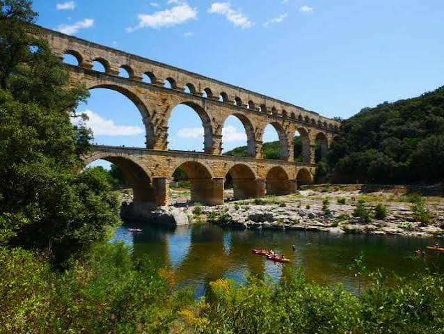

Pont du GardAqueduc romain · UNESCO 1985


⟹ Sites Emblématiques ⟸
De l’eau pour une grande ville romaine. Au Ier siècle de notre ère, Nemausus est une colonie prospère dont la population grandit. La source sacrée de la Fontaine ne suffit plus à satisfaire les besoins d’une ville romaine moderne : thermes publics, fontaines, latrines, jardins et demeures des notables. L’eau courante est aussi un symbole de prestige et de civilisation. Les autorités décident donc d’aller chercher l’eau loin de la ville, aux sources d’Eure, au pied d’Uzès.
Un aqueduc de 50 kilomètres. Pour relier Uzès à Nîmes, distantes d’une vingtaine de kilomètres seulement à vol d’oiseau, les ingénieurs doivent contourner le massif des garrigues. Le tracé de l’aqueduc s’étire ainsi sur environ 50 kilomètres, en grande partie souterrain ou au ras du sol. Le dénivelé total n’est que d’environ 12 mètres, soit une pente moyenne de l’ordre de 25 centimètres par kilomètre : une prouesse de précision pour des géomètres ne disposant que d’instruments de visée et de niveaux à eau.
Une datation revue. On a longtemps attribué l’aqueduc à Agrippa, gendre d’Auguste, vers 19 avant notre ère. Les recherches archéologiques menées depuis les années 1980, fondées notamment sur les céramiques et les monnaies retrouvées dans les chantiers, placent aujourd’hui sa construction vers le milieu du Ier siècle, sous les règnes de Claude ou de Néron, autour de 40-60 de notre ère. Le chantier aurait duré une quinzaine d’années.
Trois étages d’arcades. Pour franchir la vallée du Gardon, les bâtisseurs élèvent un pont-aqueduc de près de 49 mètres de haut, le plus haut du monde romain. Le premier niveau compte six arches, le deuxième onze, et le troisième en comptait à l’origine quarante-sept, dont trente-cinq subsistent. Le canal, couvert de dalles, court au sommet ; ce niveau supérieur mesure aujourd’hui environ 275 mètres de long, contre près de 360 mètres à l’origine.

Le génie des bâtisseurs. Le pont est construit en blocs de calcaire coquillier extraits des carrières toutes proches de l’Estel, en bordure du Gardon. Certains pèsent jusqu’à six tonnes. Aux deux niveaux inférieurs, ils sont assemblés à sec, sans mortier, grâce à une taille d’une grande précision. Les pierres en saillie visibles sur les façades servaient à soutenir les échafaudages et les cintres de bois. Des marques et chiffres latins gravés sur les blocs guidaient leur mise en place.
Un débit considérable. L’aqueduc pouvait acheminer plusieurs dizaines de milliers de mètres cubes d’eau par jour, l’estimation la plus courante étant d’environ 35 000 à 40 000 m³. L’eau mettait plus d’une journée à parcourir le trajet jusqu’au castellum divisorium de Nîmes, bassin circulaire encore visible, d’où elle était répartie dans les quartiers par des canalisations de plomb.
Le lent déclin de l’aqueduc. L’eau des sources d’Eure, très calcaire, dépose des concrétions qui réduisent peu à peu la section du canal. À partir du IVe siècle, l’entretien se relâche, et au début du VIe siècle l’aqueduc a sans doute cessé de fonctionner. Les dépôts calcaires sont alors récupérés comme matériau de construction, et les pierres de nombreux tronçons sont réemployées dans les villages voisins.
Un pont pour les hommes et les mules. Au Moyen Âge, le pont perd sa fonction hydraulique mais trouve un nouvel usage : il sert à franchir le Gardon. Pour faciliter le passage des bêtes de somme, les piles du deuxième niveau sont échancrées, ce qui fragilise dangereusement l’ouvrage. Des seigneurs locaux y perçoivent des droits de péage, et le monument devient un repère majeur sur les routes régionales.
La mémoire des Compagnons. Dès le XVIe siècle, le Pont du Gard attire les voyageurs. Les Compagnons du Tour de France viennent y admirer la stéréotomie romaine et gravent sur les pierres leurs noms, leurs signes et les dates de leur passage, dont beaucoup sont encore lisibles. En 1737, Jean-Jacques Rousseau raconte dans ses Confessions l’émotion éprouvée devant ce monument, qu’il juge supérieur à tout ce qu’il avait imaginé.
Le pont routier de Pitot. Entre 1743 et 1747, l’ingénieur Henri Pitot construit, accolé au premier niveau, un pont routier qui permet enfin de franchir la rivière sans solliciter l’ouvrage antique. Les échancrures médiévales sont comblées. Ce pont est resté ouvert à la circulation automobile jusqu’à la fin du XXe siècle, avant d’être réservé aux piétons.
La restauration du Second Empire. Après la visite de Napoléon III, une grande campagne de restauration est menée entre 1855 et 1858 sous la direction de l’architecte Charles Laisné, qui consolide les parties menacées et remplace de nombreuses pierres. Le Pont du Gard figurait déjà en 1840 sur la première liste des Monuments historiques. D’autres chantiers se succèdent au XXe siècle.
L’épreuve de la crue de 2002. Les 8 et 9 septembre 2002, un épisode cévenol exceptionnel provoque une crue historique du Gardon, dont les eaux montent de plusieurs mètres et envahissent la vallée. Le pont, conçu avec de larges arches et des avant-becs, résiste parfaitement : une démonstration spectaculaire de la solidité de l’ingénierie romaine, près de deux mille ans après sa construction.
Patrimoine mondial et Grand Site de France. Le Pont du Gard est inscrit sur la Liste du patrimoine mondial de l’UNESCO en 1985. À la fin des années 1990, le site est entièrement réaménagé : la circulation automobile est éloignée, les abords sont rendus à la garrigue et un espace muséographique est créé. En 2004, il reçoit le label Grand Site de France, qui récompense la préservation de son paysage et la qualité de l’accueil.
Un symbole universel. Monument antique le plus visité de France, le Pont du Gard est devenu l’icône du génie hydraulique romain. Il associe prouesse technique, harmonie architecturale et cadre naturel exceptionnel, entre rivière, garrigue et oliviers. Il reste le témoignage le plus spectaculaire de ce que fut l’aqueduc de Nîmes, dont on suit encore les vestiges à travers la campagne gardoise.